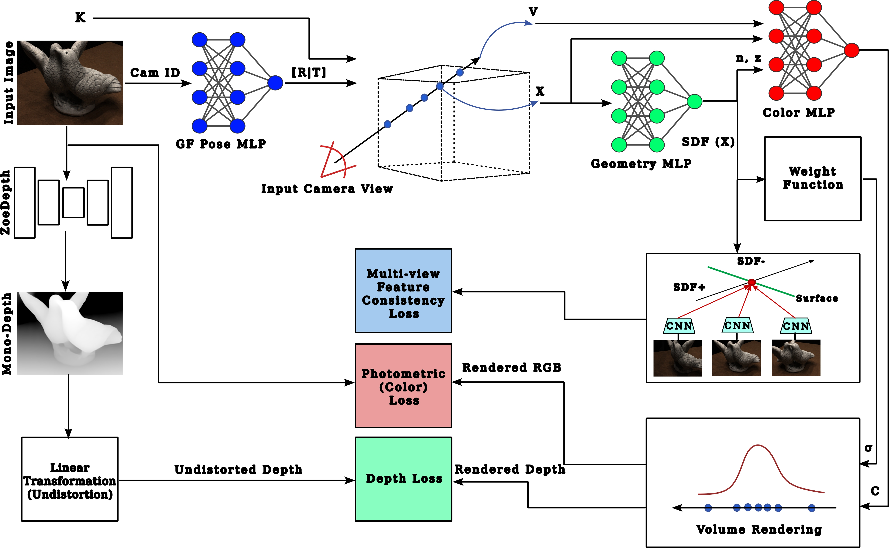

Publications

Experience
Doctoral Researcher
Eberhard Karls University of TübingenFebruary 2026 - Present
- Researching inverse rendering methods for 3D/4D scene reconstruction and material-illumination decomposition.
- Conducting tutorials and lab sessions for courses in the Computer Graphics group, Department of Computer Science.
IMPRS-IS Scholar
International Max Planck Research School for Intelligent SystemsFebruary 2026 - Present
- Participating in the IMPRS-IS PhD program.
Computer Vision Engineer
RembrandMarch 2023 - January 2026
- Developed computer vision and generative AI solutions for virtual product placement in video.
- Worked on inverse rendering methods for material-illumination decomposition from RGB images.
- Designed 3D reconstruction pipelines for recovering camera parameters and scene geometry from videos.
Teaching Assistant
Faculty of Engineering, Cairo UniversityDecember 2022 - January 2026
- Handled recitations and labs in the Computer Engineering department.
- Courses: Computer Vision, Computer Graphics, Machine Learning, Neural Networks, Cognitive Robotics.
Computer Vision Engineer
Anovate.aiAugust 2021 - February 2023
- Worked on deep learning applications for 3D scene understanding and reconstruction.
- Developed mesh-processing pipelines and deployed high-performance models with NVIDIA Triton.
Student Developer (GSoC 2020)
RoboCompMay 2020 - August 2020
- Project: DNNs for precise manipulation of household objects.
- Implemented and optimized segmentation-driven 6D pose estimation networks.
Deep Learning Research Intern
ValeoJuly 2019 - September 2019
- Studied neural style transfer for modeling sensor noise.
- Applied CycleGAN domain translation to LiDAR data for improved object detection.
Education
Doctor of Philosophy (PhD), Computer Science
Faculty of Science, Eberhard Karls University of TübingenFebruary 2026 - Present
Computer Graphics Research Group. Research area: computer graphics and vision.
Master of Science (MSc), Computer Engineering
Faculty of Engineering, Cairo UniversityOctober 2022 - January 2025
GPA: 3.97. Thesis: Neural Implicit Camera and Geometry Representations for Multiview 3D Reconstruction Without Camera Parameters.
Bachelor of Science (BSc), Computer Engineering
Faculty of Engineering, Cairo UniversitySeptember 2016 - May 2021
Grade: Distinction with Honors. Rank: 4th out of 71. Thesis: Face Generation from Text using StyleGAN2.